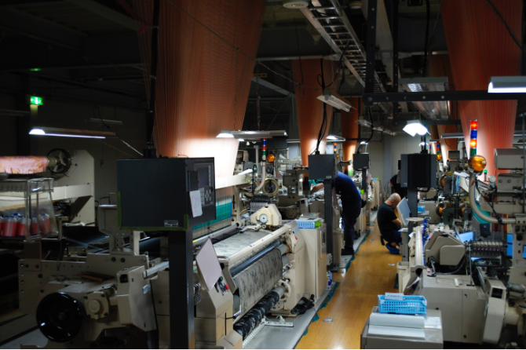
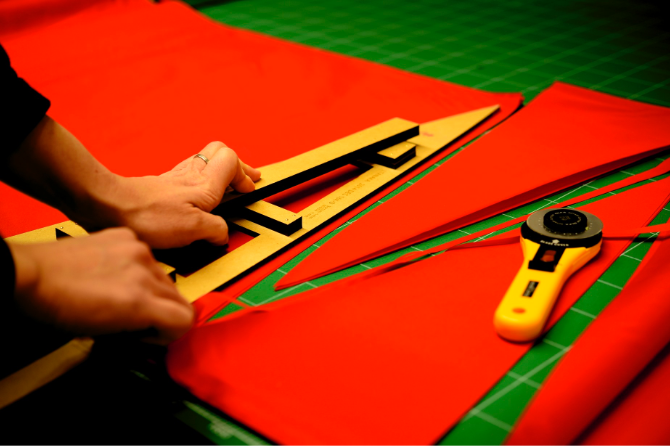

前原光栄商店について
前原光榮商店のこだわりは、
4つの工程への想いです。
大量生産・大量消費の時代以前、日本のモノづくりは丁寧かつ心くばりのこもった製品が多かったと思います。
傘づくりもかつては職人を擁し、一本一本手づくり製造をする、あたりまえの事をあたりまえにこなしておりました。
時代を経て、今日、日本のモノづくりを見直す機運が高まっております。
そんな中、前原光榮商店は昔ながらの製法を受け継ぎ、熟練の傘職人による製造を続けております。
わたしたちは「傘」という字に含まれる４つの「人」は、それぞれ
1. 生地を織る 2. 骨を組む 3. 手元を作る 4. 生地を裁断縫製する
の4つの分野の職人たちを表していると考えています。
前原光榮商店はこの4つの技術を高め、継承してきました。
特に生地の裁断縫製は、傘の出来栄えを左右する最も重要な技術のひとつ。いくら高品質な生地・骨・手元があったとしても、生地の裁断縫製が良くなければ美しいフォルムの傘は仕上がりません。
職人は生地を裁つ際の型、裁ちの正確さ、ミシンの針の落とし方さえにも気を使います。
数ミリの誤差が生じるだけで、傘を開けた時の張りや音、フォルムに影響があるからです。
このように前原光榮商店はそれぞれの素材の品質はもちろんのこと、この裁断縫製加工に強いこだわりを持って傘を製造しています。
-

- 生地を織る
- その昔、甲斐織物の産地であった山梨県の富士山麓で現在も傘の生地が製造されています。伝統的な機（はた）では、経糸（たていと）を一本一本手作業で織機にセットし、ゆっくりと丹念に織られています。
- 弊社で取り扱っている生地はほとんどが先染めの生地です。先染めとは、織る前に予め必要な色の糸を染めておくこと。このことによって生地の発色が増し、繊細で奥行きのある柄を生み出すことが可能になります。
-
- 骨を組む
-
角材をステッキのような形状に削り出し、熟練の職人の目分量で熱を加えながらまっすぐ仕上げていきます。
その後、磨き上げた中棒に「はじき」を手作業で埋め込み、骨を組んでいきます。 -
ワンタッチで開く傘が主流の昨今ですが、弊社では昔ながらの手開きの傘がメインです。
中棒にそって、丁寧に手で傘を開く動作。
この動作一つとっても、中棒の仕上げにこだわった傘は手の感触が異なります。
きっと傘を開くのが楽しみになることでしょう。
-
- 手元をつくる
- 火を使って熱を加えたり熱湯につけてやわらかくしたりと、木の素材に応じて様々な方法で「曲げ」を行います。曲げられた素材には数回にわたり塗装を行います。この手間をかけた「塗り」の工程が、使えば使うほどツヤが増し深みのある手元を生み出すのです。
- 経年変化を特に楽しむことのできるパーツはこの手元の部分。使うほどに艶を増したり、飴色に変化したり、持ち主の手になじんできます。少しの傷がついてもそれは味わいとして楽しむことができるでしょう。
-

- 生地を裁断縫製する
-
織りあがった生地と組み終えた骨は加工職人に引き継がれ、傘に仕立てあげます。
大量生産品では作業効率性を上げるために10枚以上の生地を重ねて裁断する場合もあるなか、前原光榮商店では裁断時の精度を優先して、手間がかかっても4枚重ねでの裁断を守り続けています。
加工職人が自ら調整して制作した三角形の木型を生地にあてて包丁で裁っていく、この作業が完成時の良し悪しを大きく左右します。